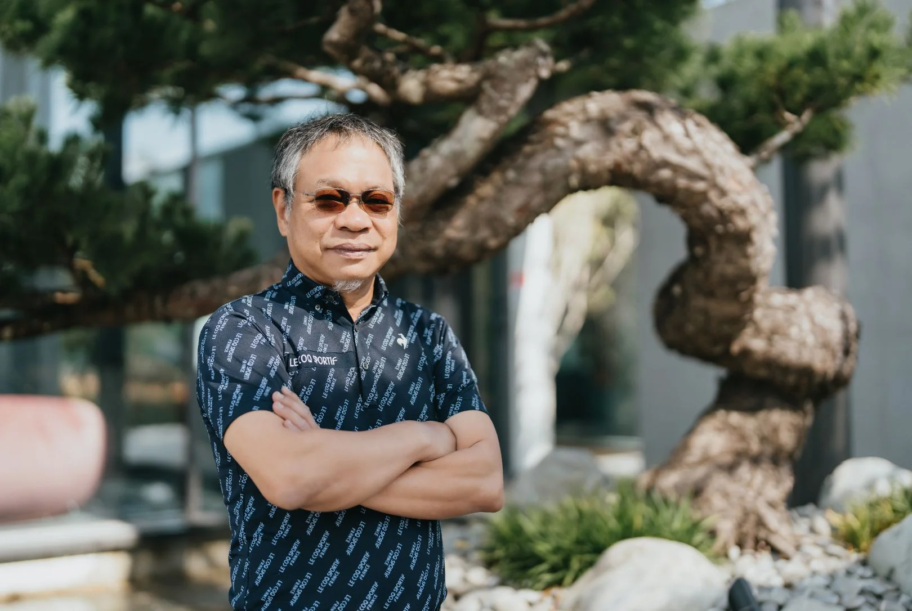
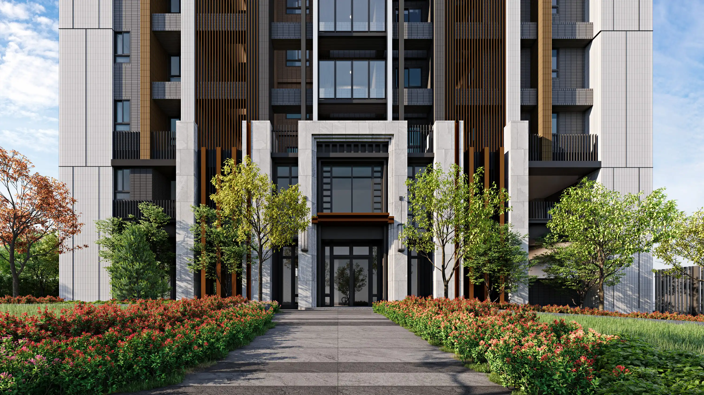

建築團隊
ARCHITECTURE TEAM

建築設計 ARCHITECTURE DESIGN
吳六合建築師事務所
吳六合建築師具備深厚實務經驗，領導「吳六合建築師事務所」深耕台灣多年。設計核心強調建築與環境的諧調共生，擅長平衡空間美學、機能需求與專業法規。憑藉嚴謹執行力與豐富的住宅、商辦實績，致力為客戶創造具備永續價值與人文溫度的建築空間。

景觀與室內設計 LANDSCAPE & INTERIOR
蘇煜淳建築師事務所
擅長景觀與室內空間的整合規劃，以精緻典雅的設計風格著稱，從公設規劃到私領域的室內配置，每一處細節都展現對美感的堅持，為住戶打造舒適愜意的居家環境。